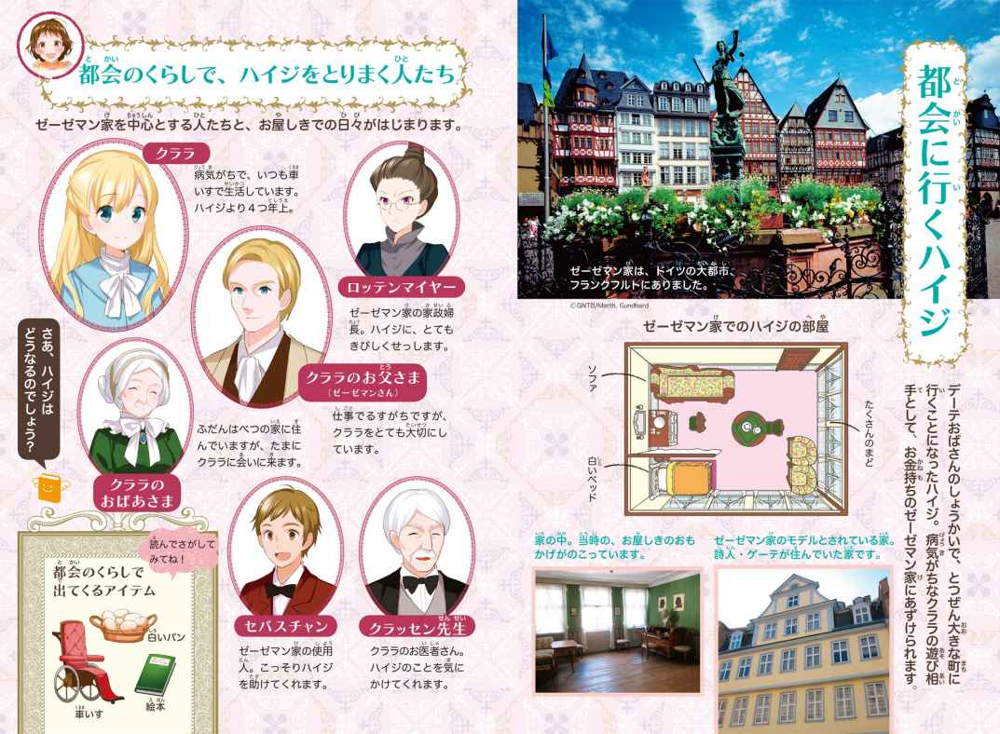
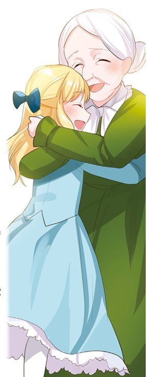

| １０歳までに読みたい世界名作9 アルプスの少女ハイジ | |
| ヨハンナ・シュピリ | |
| (2015) | |

「山登りはたいへんだけど、がんばって。」
女の子の名前は、ハイジ。いっしょにいるのは、デーテおばさんでした。ハイジのお父さんとお母さんは、ハイジがまだ一歳のときに死んでしまい、ずっとデーテおばさんに育てられてきたのです。
でも、おばさんが、ドイツのフランクフルト（＊２）という大きな町で仕事をすることになり、ハイジは、山の上に住んでいるおじいさんに、あずけられることになったのでした。
「あのおじいさんに、子どもの世話ができるのかなあ。」
山のふもとのデルフリ村の人たちは、心配そうです。おじいさんはもう七十歳でしたが、二ひきのヤギといっしょにくらしていました。昔はお金持ちだったのに、財産をなくしてしまい、ハイジのお父さんであるむすこも死んでしまって、すっかりへんくつ（＊３）になってしまったのです。
「ふう、暑いなあ。」
何も知らないハイジは、元気に山を登っていきます。荷物を少なくするために、ありったけの洋服を着せられて、あせびっしょり。すると、ヤギをたくさんつれた少年に出会いました。少年は半ズボンで、身軽にかけまわっています。
「よーし、わたしも服をぬいじゃおう。」
シャツ一まいになったハイジは、少年といっしょになって、ぴょんぴょんとびはねました。少年の名前はペーター、十一歳です。夏の間、毎日、村のヤギたちをつれて、牧場まで登っていく仕事をしていました。牧場でヤギたちに草を食べさせて、夕方になるとまた山を下りてくるのです。
「こんにちは！ わたし、ハイジよ。ねえ、ヤギをつれてどこまで行くの？」
ハイジが元気よく話しかけ、二人は、たちまちなかよしになりました。
デルフリ村から一時間近く登ったところに、ハイジのおじいさんの小屋がありました。谷全体を見下ろすことのできる、けしきのいい場所です。小屋の後ろには、大きなモミの木が三本立っていました。
おじいさんは、小屋のわきのベンチにすわって、パイプをふかしています。ハイジたちが山を登ってくるようすを、ゆったりとながめていました。小屋に着いたとたんに、ハイジはおじいさんのところに走っていき、あいさつをしました。
「おじいさん、こんにちは。」
「おやおや、どういうことだ。」
おじいさんは、つきさすような目で、ハイジをじっと見つめました。長いひげを生やし、はい色のまゆ毛はもじゃもじゃで、まるでやぶのようです。
（おじいさんのまゆ毛って、とってもおもしろい！）
ハイジは思わず、おじいさんの顔をじいっとかんさつしてしまいました。そこに、デーテおばさんとペーターもやってきました。
「おじいさん、ハイジをつれてきましたよ。赤ちゃんのときから会っていないから、わからなかったかもしれませんけど。」
「わしに、なんの用があるんだ。」
「わたし、この子のめんどうを四年間も見てきました。でも、フランクフルトに行くことになったので、これからはおじいさんに、ハイジの世話をしてほしいんです。」
「そんなことをいったって、この子が、おまえに会いたいといってなきわめいたら、どうすればいいんだ。」
「そんなの、わたしの知ったことじゃありません。おじいさんのすきなようにしてください。」
デーテおばさんが、急に来て自分勝手なことばかりいうので、おじいさんは、はらが立ってきました。
「とっとと、山を下りていけ！」
「はいはい、わかりましたよ。じゃあハイジ、元気でね。」
おばさんは、ハイジをその場にのこして、さっさと帰ってしまいました。
２おじいさんの小屋
ハイジと二人きりになったおじいさんは、ベンチにすわって地面を見つめたまま、一言も話しません。
「よーし、うらに何があるのか、見てこようっと。」
ハイジは一人で楽しそうに、うらのヤギ小屋をのぞきに行きました。それから、ざわざわとモミの木をふきぬける風の音に耳をすませました。もどってきても、おじいさんはあいかわらず、さっきと同じかっこうですわっています。
「おじいさん、どうしたのかなあ。」
ハイジはおじいさんの正面に立って、両手を背中に回し、じっと見つめていました。おじいさんはそんなハイジを見上げ、たずねました。
「何がしたいんだ？」
「おじいさんの小屋の中に何があるか、見てみたいの。」
「そうか、おいで。」
おじいさんは立ちあがって、小屋の中に入っていきます。そこには、部屋が一つしかありませんでした。すみっこにおじいさんのベッドがあり、反対側に、かまどがあって、大きななべがのっています。かべには、作りつけ（＊）の戸だながありました。
「中を見てもいい？」
戸だなには洋服やくつ下、タオル、お皿やカップなど、おじいさんの生活にひつようなものがすべてしまってあります。ハイジは、あいている場所に自分の洋服を、さっとつっこみました。それから部屋の中を見回して、ききました。
「わたしはどこでねるの、おじいさん？」
「どこでもいいよ。」
そういわれて、ハイジは部屋の中をうろうろ。小さなはしごがあったので、上がってみました。するとそこは、ほし草おき場で、新しくてかおりのよいほし草がいっぱい。まるいまどから、遠くの谷を見下ろすこともできます。
「わたし、ここでねたい！ ここはとってもすてき！」
ハイジはほし草を集めて、小さなベッドを作りました。
「おじいさん、シーツを持ってきて！ シーツがないとベッドにならないよ。」
おじいさんはすぐに、せいけつなシーツを持ってきてくれました。気持ちのいいねどこのできあがりです。
「わあ、早くねてみたい！」
ハイジは、大よろこびです。
「その前に、何か食べようじゃないか。」
おじいさんが、食事を用意してくれました。ハイジも、お皿をならべるなど、しっかりおてつだいをしました。
夕食は、しぼりたてのヤギのミルクと、火であぶってとろとろにした、チーズをのせたパンです。のどがかわいていたハイジは、ミルクを一息で飲みほしました。
「こんなにおいしいミルクを飲んだのははじめてよ。」
「そうかい。それなら、たくさんお飲み。」
おじいさんは、すぐにおかわりを入れてくれました。
ハイジは、山の食事にすっかり満足しました。
その夜ハイジは、ほし草のベッドで、ぐっすりとねむりました。夜の間、風がひどくふきあれていました。風がぶつかるたびに、小屋全体がガタガタゆれます。
（あの子は、風の音がこわいんじゃないかな。）
おじいさんは心配して、夜中にようすを見に行きました。でもハイジは少しもこわがることなく、真っ赤なほっぺで、すやすや。
（よかった。どうやら、楽しいゆめを見ているようだな。）
おじいさんはねむっているハイジを、しずかに見下ろしていました。それからにっこりわらって、自分のベッドに、もどっていったのでした。
３山の上の牧場
次の朝、ハイジは目がさめて、きょとんとしました。
「あれ、ここはどこだろう。」
すると、おじいさんの話し声が、小屋の外から聞こえてきました。
「そうか、今は山の上のおじいさんのところにいるんだった。」
ハイジは元気よくとび起きて、小屋の外に走っていきました。するとそこにはもう、ヤギ飼いのペーターが来ていました。
「ペーターといっしょに、牧場に行くかい。」
「うん、行く！ やったー。」
ハイジはうれしくて、ぴょんぴょん、とびはねました。そして、急いで顔をあらいました。
おじいさんはハイジに、おべんとうをたっぷり持たせてくれました。ヤギのミルクを飲むためのおわんも、ペーターにわたしてくれました。
「ペーター、いいかい。お昼になったら、ハイジのためにヤギのおちちをしぼって、このおわんに入れてやってくれ。」
「うん、わかったよ。」
二人は楽しく、牧場に登っていきました。夕べの風が雲をふきはらったので、見わたすかぎり、空は真っ青です。空の真ん中に、お日様がかがやいています。牧場にさく花は、うれしそうにお日様を見上げていました。
「こんなきれいなけしき、見たことない。」
ハイジは、うっとりしました。そして、あちらこちらで花をつんでは、エプロンにつつみながら登っていきました。
「ハイジ、気をつけて！ まいごになるんじゃないよ。」
ペーターは、ハイジに何度も声をかけました。
やがて二人は、大きな岩山の下にある牧場にとうちゃくしました。ペーターは、おべんとうを地面がくぼんだところにおくと、日当たりのよい場所でごろりと横になりました。まわりでは、ヤギたちが草を食べています。
ハイジはねころんでいるペーターのとなりで、あたりの美しい風景を見ていました。
（牧場って、なんてすてきな場所なんだろう。ここにいると、とってもいい気持ち。）
岩山にすんでいるタカが、するどい声を上げて空をとんでいきます。
「タカのすが見たいな。」
ハイジが思わずそういうと、ペーターは、きけんだからと、止めました。
ペーターが世話をしているヤギたちには、それぞれ名前がついていました。おじいさんが飼っている二ひきのヤギは、白いのがスワン、茶色いのがクマ。ハイジは、ほかのヤギたちの名前も、すぐにおぼえました。
お昼になると、ペーターがスワンのおちちをしぼって、おわんに入れてくれました。さあ、おべんとうの時間です。二人はすわって、それぞれのおべんとうを食べはじめました。ハイジが、おじいさんの持たせてくれたつつみを開けると、大きなパンが出てきました。
「これ、一人では食べきれないから、ペーターにあげる。」
ハイジは自分のパンを分けると、大きいほうの一切れを、チーズの大きなかけらといっしょにペーターにさしだしました。ペーターは、ごうかなお昼ごはんにびっくり。
「ほんとにくれるの？ ありがとう。」
二人はおなかがいっぱいになって、とても幸せな気持ちです。
お昼ごはんがすむと、ハイジはまた、ヤギたちと遊びました。ヤギたちも、やさしいハイジがすぐに大すきになりました。
「さあ、ヤギさんと、おにごっこしよう！」
走ってつかれると、今度は、きれいな花をさがしました。ハイジのエプロンは、つみとった花でいっぱいになりました。
牧場での時間は、あっというまにすぎていきました。ふと気がつくと、お日様が山の向こうにしずもうとしています。そのしゅん間、あたり一面の草が金色にかがやいたので、ハイジはおどろいて、さけびました。
「ペーター、見て。山がもえてる！」
火のように赤くなった山は、やがてバラ色になり、そのあと、はい色になって、まぶしい光は、いつの間にか消えていきました。
「さっきまで、あんなに明るかったのに、どうしたのかしら。」
ハイジは地面にすわりこんで、ぼうっとしています。
「またあした、これと同じけしきが見られるさ。」
ペーターはそういうと、口笛でヤギたちをよびあつめました。
「毎日、こんなふうなの？」
ハイジは、たずねました。
「たいていはね。」
ペーターは答えました。
「あしたもまた、こうなるの？」
「うん、あしたもだ！」
それを聞いて、ハイジはわくわくしてきました。
ハイジは小屋にもどると、おじいさんに今日一日のことをくわしく話しました。夕方、山が火のように赤くなったことを話すと、おじいさんはどうしてそんな色になるのか、教えてくれました。
「お日様が『お休み』をいったんだよ。自分のいちばんきれいな光を投げかけて、『あしたまた来るまで、おぼえていてね』ってね。」
「そうだったのね。お日様も、わたしたちの友だちなのね。」
ハイジはこの話が気に入りました。そして、ヤギたちのゆめを見ながら、ほし草のベッドでぐっすりねむったのでした。
４ペーターのおばあさん
ハイジは、それから夏の間、毎日ペーターといっしょに牧場に行きました。そうやってすごすうちに、すっかり日にやけ、たくましくなりました。ハイジは楽しく幸せに日々をすごしていました。
やがて秋になり、風がごうごうと大きな音を立ててふくようになると、おじいさんはハイジに、こういいました。
「小屋から出ては、いけないよ。風が強くなると、小さな子どもはふきとばされてしまうからね。代わりに、小屋の中で仕事をてつだっておくれ。」
「うん、わかった。」
おじいさんが家具をしゅうりしたり、おいしそうなチーズを作ったりするのを見るのは、とても楽しい時間でした。とくに、丸くてきれいなヤギのチーズを作る仕事はおもしろくて、ハイジはいつもわくわくしながら、おじいさんが両手でなべの中をかきまわすのをながめていました。

「おじいさんのチーズ、とってもおいしそう！ 早く食べたいな。」
やがて、寒い冬がやってきました。
あるばん、たくさんの雪がふりつもって、山は一面、真っ白になりました。そうなると、ペーターももう、ヤギをつれて山を上がってくることはできません。
「緑の草や、きれいなお花はどうなっちゃったのかな。」
ハイジはふしぎそうに、まどから雪げしきを見ていました。
次の日の午後、ハイジとおじいさんが火のそばにすわっていると、だれかが外でガタガタと音をさせました。
ペーターがハイジに会いたくて、雪まみれになりながら、たずねてきてくれたのです。ペーターはハイジのしつもんに答えて、冬の間通っている村の学校のことを、いろいろと話してくれました。おじいさんはゆかいそうに二人の話を聞き、ペーターの体があたたまると、ばんごはんを用意してくれました。食事が終わって帰る時間になると、ペーターがいいました。
「ありがとう、お休みなさい。来週の日曜日、また来るよ。それから、うちにも来てほしいって、ばあちゃんがいってたよ。」
ハイジは、ペーターのおばあさんが自分に会いたがっていると知って、うれしくなりました。
「おばあさんのところに、つれていって。」
それからというもの、ハイジは何回も、おじいさんにせがみます。
「雪が深すぎるから、あぶないよ。」
おじいさんはさいしょのうち、そういって止めていました。でも四日目にとうとう、ハイジをそりに乗せ、ペーターの住む家までつれていってくれたのです。
「暗くなったら、むかえに来るから、外に出てくるんだよ。」
おじいさんはそういってハイジをおろすと、また小屋にもどっていきました。
ハイジは、ペーターの小屋に入っていきました。小屋の中はせまく、とても古びています。目の前にはテーブルがあり、一人の女の人がペーターの服をつくろっていました。ペーターのお母さんです。部屋のすみでは、こしの曲がったおばあさんが、糸をつむいでいました。
（この人が、わたしに会いたがってる、おばあさんね。）
ハイジは、まっすぐおばあさんのところに行って、あいさつをしました。
「こんにちは、おばあさん。遊びに来たよ！」
おばあさんはハイジの手を取ると、しばらく考えてから、いいました。
「あんたが、山の上のおじいさんのところのハイジかい？」
「そうよ。」
ハイジは、うなずきました。
ハイジは部屋の中を見回し、目に入るものはすべて、じっくりかんさつしていました。そしてふと、こういったのです。
「見て、おばあさん、あそこのよろい戸がガタガタいってるよ。おじいさんだったら、あそこにくぎを一本打って、しっかりとめておくのに。」
「あら、りこうな子だね。」
おばあさんは、いいました。
「でもうちには、小屋を直せる人がいないんだ。ペーターは、まだ無理なんだよ。わたしには見えないけど、音は聞こえるよ。風がふくと、あちこちでガタガタ、バタバタ。小屋がばらばらになりそうで、心配になっちゃうんだよ。」
「どうして見えないの、おばあさん。わたしが外に行って、よろい戸を開けたら、明るくなって見えるようになるかな。」
「ああハイジ、わたしはもう決して目が見えないんだよ。死ぬまで、見えないんだ。」
おばあさんの言葉を聞いて、ハイジはなきだしてしまいました。おばあさんは、自分のためにそんなにも悲しんでくれるハイジのようすに、心を打たれました。
「ありがとう、ハイジ。近くにおいで。目が見えないと、親切な言葉を聞きたくなるんだよ。そばにすわって、山の上で何をしてるのか、おじいさんはどうしているか、いろいろ話しておくれ。」
すると、ハイジはなみだをふいて、生き生きと話しはじめました。
「あのね、夏は、毎日牧場に行って、とても楽しかったの。牧場にはたくさんのお花がさいていて、すごくきれいなのよ。冬になってからは、おじいさんのおてつだいをしているの。おじいさんはチーズ作りの名人だし、わたしのためにいすを作ってくれたのよ。」
おばあさんは、村の人からへんくつだと思われているおじいさんが、ハイジにとてもやさしくしているのを知って、すっかりおどろいてしまいました。
やがて、ペーターが学校から帰ってきました。
「ただいま。あ、ハイジ、遊びに来てくれたんだね。」
「うん、ペーター、お帰り。」
おばあさんが声をかけました。
「ペーター、お帰り。字は読めるようになったかい？」
「ううん、まだ読めないよ。字を読むのは、すごくむずかしいんだ。」
おばあさんは、とてもざんねんそうでした。家にある古い本を、だれかに読んでもらいたいと思っていたのです。
ハイジはその日、家にもどると、おばあさんの小屋を直してあげてほしいと、おじいさんに熱心にたのみました。
「それなら、直しに行こう。」
おじいさんは、ハイジのねがいを聞きいれてくれました。そして、次の日、またハイジをペーターのおばあさんのところに送っていき、ハイジとおばあさんが小屋の中で話をしている間に、小屋の屋根やかべを直してくれました。
トントン、トントン。おじいさんがくぎを打つ音がひびきます。
「おや、いったい何が起こったんだろう。まさか、小屋がこわれはじめたんじゃないだろうね。」
「ちがうのよ、おばあさん。おじいさんが、小屋を直しているのよ。」
「ああ、そうだったのかい。なんて、ありがたいことだろうね。」
おばあさんはとてもおどろき、そしてよろこびました。
目も見えず、長い間さびしい生活を送ってきたペーターのおばあさんは、ハイジと話すのが楽しくてたまりません。それから毎日、おばあさんは朝早いうちから、ハイジの足音を待ちわびるようになりました。ハイジと話をしていると、時間はあっというまにすぎていきます。
そして、おじいさんのおかげで、小屋ももう、ガタガタいわなくなりました。
「こんなによくねむれるようになって、おじいさんの親切は決してわすれないよ。」
おばあさんは、くりかえし、そういって感謝しました。
５フランクフルトへ
アルプスに来てさいしょの冬がすぎ、また楽しい夏が来て、それからもきせつがめぐっていきました。ハイジは八歳になり、ヤギの世話がとても上手になっていた冬のことです。
ペーターは村の学校の先生から、おじいさんあての伝言を二度、あずかってきました。
「ハイジはもう、八歳です。ぜひ、デルフリ村の学校に入学させてください。」
でも、おじいさんはそのたびに、ハイジを学校に行かせるつもりはない、とことわっていました。
三月のお日様が雪をとかしはじめたころ、村の牧師さんが、とつぜんおじいさんの小屋をたずねてきました。
「そろそろハイジを学校に行かせてはいかがですか。学校に通えるように、山を下りて、わたしたちといっしょにデルフリ村でくらしましょう。」
しかし、おじいさんは、きっぱりとことわりました。
「わかいころは村に住んでいたけれど、あそこのくらしは、わしには合いません。みんなにうわさ話をされるのは、きらいなんです。」
「そうですか......。ざんねんです。でも、いつか、あなたが来てくださるのを、待っていますよ。」
牧師さんは、悲しそうに山を下りていきました。
（ハイジはこの山の上で、幸せにくらしているんだ。わざわざ村に行って、学校に通うひつようはない。）
おじいさんは、ふきげんになりました。
「ねえ、おじいさん、おばあさんのところに行こうよ。」
「今日はダメだ。」
おじいさんはその日、小屋から出ようとはしませんでした。
その次の朝、フランクフルトではたらいているデーテおばさんが、とつぜんたずねてきました。前とはちがって、きれいなぼうしをかぶり、長いドレスを着ています。
（なんて、気どったかっこうをしているんだろう。）
おじいさんはデーテおばさんのかっこうをじろじろながめましたが、何もいいませんでした。デーテおばさんのほうは、おじいさんに向かって熱心に話しはじめました。
「ハイジはここで、楽しいくらしをしているのでしょうね。でもわたし、ハイジをまた引きとりに来たのです。しんじられないほど幸運な話が転がりこんできたんですよ。
わたしがフランクフルトでお仕えしているご家族の親せきに、とてもお金持ちの人がいらっしゃるんです。そこのおじょうさまは、足が悪くて、なかなか外に出ることができないし、ひとりっ子なので、遊び相手がほしいそうなんです。ハイジの話をしたら、ぜひつれてきてほしいんですって。」
「いいたいことは、それで終わりか。」
おじいさんが、デーテおばさんの話をさえぎりました。
「あら、まるで、わたしがくだらない話をしたようないい方ですね。それならいわせてもらうけど、この子は八歳なのに、学校にも行かせてもらってないじゃありませんか。何もできないし、何も知らない。この子のしょうらいは、わたしにもせきにんがあります。幸運を手に入れるチャンスがきたっていうのに、じゃまするのは、やめてくださいね。」
「だまれ！ ハイジをつれていくなら、もう二度と、わしの前にあらわれるな。この子がおまえみたいになるのを見たいとは思わん。」
おじいさんは、外に出ていってしまいました。
デーテおばさんは、ハイジにいいました。
「さあ、いらっしゃい。あんたの洋服はどこ？」
「行きたくない。」
ハイジは、答えました。
でも、デーテおばさんは、あきらめません。
「いっしょにおいで。あんたにはよくわからないだろうけど、そうぞうできないくらい、幸せになれるのよ。」
デーテおばさんは、戸だなからどんどんハイジの荷物を出して、ひとまとめにしました。
「いやだったら、すぐにもどってこられる？」
ハイジは、たずねました。
「そうね、帰りたくなったら、帰れるわよ。列車は速いから、すぐにまた帰ってこられるわ。」
デーテおばさんはハイジの手を取りました。二人は山を下りていくとちゅうで、ペーターにばったり会いました。
「どこへ行くの。」
ペーターが、たずねました。
「わたし、急いでフランクフルトまで行かなくちゃいけないの。でもその前に、おばあさんのところに行きたい。」
ハイジがいうと、おばさんが止めました。
「だめ、だめ。今はおばあさんと話なんてしているひまはないわ。」
デーテおばさんはハイジをぐんぐん引っぱっていきました。ペーターは自分の家に帰ると、つくえをたたきながらさけびました。
「ハイジのおばさんが、ハイジをつれていっちゃった！」
それを聞いたおばあさんは、ふるえながらまどを開けて、大声でよびかけました。
「デーテ、デーテ、ハイジをつれていかないで！」
歩いていく二人にも、その声は聞こえました。
「おばあさんがよんでる。行ってあげなくちゃ。」
ハイジは、おばあさんのほうに、走ってもどろうとしました。
「待って、ハイジ。フランクフルトに行けば、おばあさんがよろこぶおみやげだって、持ってかえれるわよ。」
デーテおばさんは、ハイジの手を引っぱって、そういいきかせました。
「それなら、やわらかい白パンを買ってきてあげたいな。おばあさんは歯が悪くて、かたい黒パンはあまり食べられないから。」
ハイジはいいました。そして、おばあさんをよろこばせるために早くフランクフルトに行こうと、走りはじめました。デーテおばさんは息を切らして、あとを追いかけました。

その日からハイジのおじいさんは、食べものを買いに村にやってきても、こわい顔でみんなをにらみつけるようになりました。
おじいさんは、ハイジがいなくなって、とてもさびしかったのです。家族がいないおじいさんには、話し相手もいませんでした。でも、村の人は、そんなおじいさんの気持ちがわかりません。
「おじいさんは、ますます意地悪な人になったようだね。」
「ハイジがにげだせたのは、運がよかったな。」
村の人たちは、おじいさんを見かけるたびに、こんなふうに、うわさしたのでした。
６ゼーゼマン家にとうちゃく
フランクフルトのゼーゼマン家では、ひとりむすめのクララが勉強部屋で車いすにすわっていました。遊び相手になってくれる女の子がとうちゃくするのを、いまかいまかと待っていたのです。
「まだなの、ロッテンマイヤーさん。」
ロッテンマイヤーさんは、ゼーゼマン家のおくさまがなくなってから、ずっとこの家ではたらいていました。ご主人のゼーゼマンさんは、仕事で長い間るすにすることが多く、家の中のことはロッテンマイヤーさんにまかされていたのです。
「女の子たちは、まだ来ないの？」
クララが、何度目かにこうたずねたとき、ちょうどデーテおばさんがハイジをつれて入ってきました。
「こんばんは、ロッテンマイヤーさん。スイスから、おじょうさまの遊び相手をつれてまいりました。」
ロッテンマイヤーさんは立ちあがり、ハイジをじろじろとながめました。そまつな上着を着て、古い麦わらぼうしをかぶったハイジのすがたは、ロッテンマイヤーさんの気に入りません。
「なんて、みすぼらしいかっこうでしょう。あなた、なんていう名前なの？」
ロッテンマイヤーさんは、たずねました。
「ハイジよ。」
ハイジは、自分で答えました。
「あら、へんな名前ね。ちゃんとした名前はないの？」
「わからない。」
ハイジがそう答えると、ロッテンマイヤーさんはびっくり。
「まあ、なんて失礼な返事でしょう！」
ロッテンマイヤーさんは、おこりだしました。
すると、デーテおばさんが、あわてて口をはさみました。
「おゆるしくださいませ。この子の名前はアーデルハイトです。その名前をちぢめて、みんなからハイジとよばれているのです。」
「そうですか、アーデルハイトならちゃんとした名前ですね。でも、クララおじょうさまの遊び相手には、おじょうさまと同じ十二歳くらいの子をおねがいしたはずですよ。この子は何歳なの？」
「八歳だって、おじいさんがいってたわ。」
ハイジがまた、自分で答えました。
「あら、まだ八歳なの？ なんてこと！ どんな勉強をしてきたの。使った教科書は？」
「わたし、字は読めないわ。ペーターも読めないのよ。」
「まあ。字が読めないの、ほんとうに？ そんなことがあるのかしら。」
ロッテンマイヤーさんは、ぎょっとしてさけびました。
（おじょうさまと同じくらい、勉強ができる子どもに来てほしかったのに。字が読めないなんて、ひどすぎる。どうして、こんなことになってしまったんだろう。）
ロッテンマイヤーさんはとほうにくれていましたが、少し落ち着きを取りもどして、いいました。
「デーテさん、これではぜんぜん話がちがいますね。どうしてこんな子をつれてきたんですか？」
しかし、デーテおばさんも引きさがりません。なんとしても、ハイジをこのお屋しきにあずけたかったのです。
「ロッテンマイヤーさん、この子はまさに、あなたがさがしておられるような子だと思ったのです。そのへんの子どもたちとはちがう、みりょくのある子がほしいというお話でしたからね。どうぞ、この子をしばらくおいてください。すぐにまた、ようすを見にまいりますわ。」
デーテおばさんはそういいすてると、さっさと出ていってしまいました。
お屋しきの食堂では、夕食のじゅんびが整っていました。使用人のセバスチャンが、クララの車いすをおして、食堂へつれていこうとしました。
「あんたって、ヤギ飼いのペーターに、にてるわ。」
ハイジはセバスチャンに話しかけました。それを聞いたロッテンマイヤーさんは、またもびっくりぎょうてん。
「『あんた』とよびかけるなんて。この子は、おぎょうぎが悪すぎます。」
食堂の席に着くと、ハイジは自分の前においてある白パンを見て大よろこびしました。
「これ、もらってもいいの？」
セバスチャンがうなずくと、ハイジはあっというまにその白パンをポケットにかくしてしまいました。
（このやわらかいパンは、ペーターのおばあさんへのおみやげにしよう。）
セバスチャンは、それを見てわらいだしそうになりましたが、なんとかがまんしました。
ハイジはお屋しきでのごちそうの食べ方がわからず、とまどうばかりです。ロッテンマイヤーさんが長いお説教を始めました。お屋しきには、たくさんの決まりがあるのです。
「アーデルハイト、いいですか。朝起きたら、ちゃんと服を着がえて、食堂に下りてくるのですよ。あいさつをきちんとして、朝ごはんを食べたら、勉強です。勉強のときには、しずかにすわって、家庭教師の先生のお話を聞いて......そして、お昼ごはんのときには......。」
でも、そんな注意を聞いている間に、つかれていたハイジは、ねむってしまいました。なにしろ、この日は何時間も列車に乗ってきたのです。ロッテンマイヤーさんは、長々と決まりごとを説明して、最後にたずねました。
「さあ、アーデルハイト！ ちゃんとおぼえましたか。」
「ハイジは、もうとっくにねむっているわ。」
クララが、ゆかいそうに答えました。クララにとって、夕食の時間がこれほどおもしろかったのは、ひさしぶりのことでした。
７毎日が大さわぎ
次の朝、目をさましたハイジは、自分がどこにいるのか、すぐにはわかりませんでした。
（ここはどこだろう。ほし草のベッドじゃないし、おじいさんやヤギの声も聞こえないし......。）
自分がねているのは、背の高い白いベッドで、まわりは見なれないものばかりです。でもやがて、フランクフルトに来たことを思い出しました。そして、きのう、ロッテンマイヤーさんにいいつけられたとおり、ベッドからとびおりて、身じたくをしました。
部屋を見回すと、まどは、カーテンでおおわれています。
（なんだか、かごの中にとじこめられたみたい。）
カーテンのすきまから外を見ても、よその家のかべとまどしか見えません。ハイジは、アルプスの山や空が、なつかしくなってきました。
朝ごはんのあと、家庭教師の先生がやってきました。
「さあ、アーデルハイト、早く字をおぼえるのですよ。」
ロッテンマイヤーさんが、きびしくいいました。クララとハイジはいっしょに授業を受けました。ところが、しばらくすると、ハイジはとつぜん、つくえの上のものをひっくりかえし、外に走りでてしまったのです。じゅうたんも本も、インクでべたべたです。
その音を聞いてかけつけてきたロッテンマイヤーさんに、クララが楽しそうに説明しました。
「ハイジには、悪気はなかったのよ。ちょうど今、たくさんの馬車が家のそばを通っていったの。そしたらハイジがあわてて外に出ようとしてインク入れをひっくりかえしちゃったのよ。ハイジは、まだ一度も馬車を見たことがないのかもしれないわね。」
ハイジは、げんかんの前で、ぽかんと口を開けて道路をながめていました。ロッテンマイヤーさんは、ハイジをしかりつけました。
「どうしたのですか。とつぜんにげだしたりするなんて！」
「モミの木のざわざわいう音が、聞こえたの。でも、もう聞こえなくなっちゃった。」
ハイジは、馬車の音を、モミの木の音とかんちがいしたのです。
「モミの木ですって！ ここは森じゃありませんよ。さあ、上がってきて、自分がどんなしっぱいをしたのか、よく見てごらんなさい。」
部屋にもどったハイジは、インクでゆかをよごしてしまったことに気づいて、びっくりしました。
「ごめんなさい。もう、授業中にとびだしたりしません。」
これからはしずかに勉強することを、やくそくしました。
ハイジはロッテンマイヤーさんから、午後の休み時間には、すきなことをしてもいいといわれていました。そこで、セバスチャンにたのんでまどを開けてもらい、いすの上から外のけしきをながめました。
「石の道路しか見えないのね。」
ハイジは、とてもがっかりしました。
「もし、お屋しきのまわりをぐるっと歩いたら、何が見えるの？」
「やっぱり石の道路だけですよ。」
セバスチャンは答えました。
「じゃあ、この町のずっと向こうを見ようと思ったら、どうすればいいの。」
「そのためには、高い塔に上らなくちゃいけませんね。あそこに見える、てっぺんに金色の玉がついている教会の塔からだったら、きっとよく見えますよ。」
（アルプスの山が見たい！）
ハイジは急いで、お屋しきの外に出ていきました。教会の塔は近そうに見えたのですが、いくら歩いてもちっともたどりつけません。ハイジはまいごになってしまい、町角で手回しオルガンをひいている男の子に、教会まで案内してもらいました。
やっと着いた教会で、ハイジはよびりんのひもを引っぱってみました。すると、
「どうしたんだ？ ここは、子どもが来るところじゃないぞ。」
と、出てきた番人におこられました。
「ごめんなさい。どうしても、遠くが見たいんです。わたしを塔の上に、上らせてください！」
ハイジは一生けん命おねがいして、塔に上らせてもらいました。でも、塔から見るけしきも、屋根やえんとつばかり。アルプスの山は、見えません。ハイジはしょんぼりしました。
「おじょうちゃん、元気を出しな！ ほら、すきなのをあげるから、持ってかえっていいよ。」
番人はかわいそうに思って、生まれたばかりのねこの赤ちゃんを分けてくれました。ハイジはよろこんで、右と左のポケットに、それぞれ一ぴきずつ、ねこの赤ちゃんを入れました。一ぴきはクララにあげて、もう一ぴきは自分で世話をするつもりだったのです。
帰りはまた、男の子がお屋しきまで送ってくれました。ハイジがよびりんを引っぱると、セバスチャンがとびだしてきました。
「どこに行っていたんですか。さあ、早く！」
お屋しきでは、もう夕食の時間で、みんながハイジを待っていたのです。
ハイジがだれにもいわずに外出したので、ロッテンマイヤーさんはかんかんでした。
「だまって外に行っては、いけません！」
そのとき、ポケットの中でねこの赤ちゃんが、鳴きだしました。
「ニャア、ニャア。」
「まあ、アーデルハイト、ふざけているのね。」
「ちがいます、ロッテンマイヤーさん、これは本物のねこです。」
「きゃあ！」
ねこが大きらいなロッテンマイヤーさんは、それを聞いてにげだしてしまいました。
クララは、ねこの赤ちゃんを見ると、
「まあ、かわいい！」
と、大よろこび。クララとハイジはセバスチャンにたのんで、ロッテンマイヤーさんの目のとどかないところに、ねこたちのねどこを作ってもらいました。
ハイジのおかげで次々と事件が起こって、クララは毎日が楽しくてたまりません。でもロッテンマイヤーさんは、ハイジのことで、ものすごくはらを立てていました。
「アーデルハイトには、きびしいばつをあたえなくてはいけません。もう二度と悪いことができないように、真っ暗な地下室にとじこめようと思います。」
クララは大きな声で反対しました。
「ロッテンマイヤーさん、そんなことはしないで。パパが帰ってくるまで待って。もうじきもどるという手紙がきたんですから。」
「わかりました、クララ。いいでしょう。でもわたしも、お父さまに意見をいわせていただきますからね。」
そういいすてて、ロッテンマイヤーさんは、部屋を出ていきました。
８クララのお父さま
ハイジは毎日、クララといっしょに授業を受けていました。でも、なかなか文字をおぼえることができません。
「ずっと字を見てると、だんだん動物の顔に見えてくるわね。」
ハイジがおもしろいことばかりいうので、クララは、授業中もちっともたいくつしませんでした。夕方になると、ハイジはクララのそばにすわり、山での生活のことをいろいろと話しました。そうすると、しまいにはいつも、なつかしい気持ちでいっぱいになるのでした。
「もう帰らなくちゃ。あしたには山に帰るわ！」
ハイジは毎日、そうくりかえしました。クララはそのたびに、引きとめました。
「パパが帰ってくるまで、ここにいなくちゃだめよ。そうしたら、あとのことはパパが決めてくれるから。」
ハイジは食事のとき、ペーターのおばあさんのための白パンを、一つずつポケットに入れて、こっそり部屋に持ちかえっていました。自分がフランクフルトに長くいればいるほど、おばあさんにあげるパンがふえていくのだと思って、つらいことがあってもがまんしていたのです。でも、自分の部屋にもどると、山のけしきを次々に思いうかべてしまいます。
（今ごろアルプスは、緑がきれいだろうな。日に当たって花が黄色に光っているだろうし、お日様の光で、雪も山も広い谷も、すべてが、かがやいているだろうな。）
そう考えると、いても立ってもいられなくなりました。そしてある日、とうとうがまんできなくなってしまったのです。
ハイジは大急ぎで白パンをショールにつつむと、麦わらぼうしをかぶり、お屋しきを出ていこうとしました。でも、げんかんでロッテンマイヤーさんに見つかってしまいました。
「これは、なんのまねなの？ あちこち出歩いちゃいけないって、きびしくいっておいたでしょう。それなのに、また出ていこうとして。おまけに、そんなひどいかっこうで。」
「あちこち出歩くんじゃなくて、家に帰ろうと思っただけです。」
ハイジはびっくりしながら、答えました。
「なんですって。家に帰る？」
ロッテンマイヤーさんは、はらを立て、ハイジに向かって大声でいいました。
「にげようとしたのね！ このお屋しきのどこが気に入らないの？ 何が不足なの？」
「何もありません。ただ、家に帰りたいだけです。あんまり長く、るすにすると、ヤギたちが悲しむし、おじいさんやおばあさんだって、わたしのことを待っているわ。それにここでは、お日様がお休みなさいをいうところが、見られないんですもの。」
「この子はおかしいわ。すぐに、上につれていきなさい！」
ロッテンマイヤーさんは、セバスチャンをよんで、ハイジを部屋にもどしました。セバスチャンは一生けん命、ハイジをなぐさめました。
「悲しまないで、元気を出しましょう。子ねこたちも、屋根うらで元気にしていますよ。あとでいっしょに、ねこたちを見に行きましょう。」
ハイジは少しだけうなずきましたが、ぜんぜん元気が出ませんでした。
（デーテおばさんはすぐに帰れるといったのに、ちっとも帰らせてもらえない。早く、おじいさんや、ペーターのおばあさんに会いたい！）
次の日、ロッテンマイヤーさんは、ハイジがひどいかっこうでお屋しきを出ていこうとしたことを思い出し、ハイジの荷物や洋服を整理することにしました。
「あら、それなら、わたしの洋服をハイジにあげてちょうだい。」
クララは、自分のお古のドレスやショールを、ハイジにたくさんプレゼントしました。
ところが、洋服を整理しているときに、ハイジがためこんでいた白パンが見つかってしまったのです。
「こんな古くて、かたいパンをしまっているなんて！」
ロッテンマイヤーさんは、白パンを全部すててしまいました。
これまでなくのをがまんしていたハイジでしたが、白パンがすてられると、大きな声でなきはじめました。
「おばあさんにわたすパンがなくなっちゃった。もうおばあさんに、何もあげられない！」
むねがはりさけそうになっているハイジに、クララがやさしくいいました。
「なかないで、ハイジ。あなたが山に帰る日が来たら、白パンをあげるわ。やくそくする。だから、そんなになかないで。」
ハイジはしばらく、なきやむことができませんでした。でも、クララのなぐさめの言葉はよくわかったので、それを心のささえにしようと思いました。
数日後、クララのお父さまのゼーゼマンさんが、たくさんのおみやげを持って、仕事の旅からもどってきました。まずは、むすめにあいさつしようと、クララの部屋に入っていくと、ちょうどそこにハイジもいました。
「やあ、こちらが、スイスの小さなおじょうさんだね。おいで、あく手しよう。きみとクララはいい友だちになったのかい。けんかしたり、意地悪したり、していないかい。」
「いいえ、クララはいつもやさしいわ。」
ハイジは、答えました。
「お帰りなさい、パパ。けんかなんて一度もしなかったわ。」
クララは元気よくいいました。
お父さまは食堂に行き、ロッテンマイヤーさんとも話をしました。ロッテンマイヤーさんは、とてもふまんそうに、ハイジのことを話しはじめました。
「わたしたちはみんな、だまされてしまったのです。クララおじょうさまの遊び相手をスイスからよびよせたのですが、とんでもない子どもだったのです！ あの子がやることは、理解できません。」
お父さまは、家庭教師の先生からも意見を聞こうとしました。それから、もう一度クララの部屋へ行き、クララと二人きりになるために、ハイジに水をくみに行ってもらいました。
「愛するクララ、はっきりと教えてくれないかな。ロッテンマイヤーさんはなぜ、ハイジはおかしいなどと考えるんだろう。きみには説明できるかな。」
もちろん、クララにはちゃんと説明できました。そして、ロッテンマイヤーさんが、ねこの赤ちゃんを見てこわがった話を、お父さまにも聞かせました。

「じゃあ、あの子を家に送りかえすことはのぞまないんだね、クララ。」
「そうよ、パパ。ハイジが来てからは、毎日がとても楽しいのよ。それにハイジはたくさんのことを話してくれるし。」
「わかった、クララ。ハイジには、この屋しきにいてもらおう。」
お父さまは、ロッテンマイヤーさんに、ハイジをずっと、屋しきにおくつもりであることをつたえました。
「ロッテンマイヤーさん、クララはハイジが来てくれて、とても楽しいといっていますよ。どうか、ハイジがこの家で楽しくすごせるように、いつもやさしくしてあげてください。」
お父さまは二週間お屋しきにいてから、また遠くに出かけていきました。その代わりに、クララのおばあさまが、しばらくお屋しきに来ることになりました。
９クララのおばあさま
おばあさまが、お屋しきにとうちゃくしました。クララが話していたとおり、おばあさまはとてもやさしい方で、ハイジを見つめる目には、温かい気持ちがあふれていました。
「こんにちは、ハイジ。あなたがいつも、クララとなかよくしてくれて、とてもうれしいわ。」
しかし、ロッテンマイヤーさんは、ハイジのことでとてもこまっているのだと、おばあさまに話しました。
「あの子には、何かをおぼえるなんて、無理なんです。まだ字も読めません。」
それを聞いて、おばあさまはおどろきました。ハイジが何もおぼえられない子には見えなかったからです。そこで、自分でたしかめることにしました。
「ペーターも字が読めないし、わたしにも、むずかしすぎるわ。」
ハイジは、字をおぼえることを、さいしょから、あきらめていました。
「ハイジ、あなたはかしこい子よ。きっと、字が読めるようになるわ。」
おばあさまは、はげましました。おばあさまは、ハイジがときどき悲しそうな顔をするのにも、気がつきました。
「具合が悪いの？ 何か、なやんでいるの？」
でもハイジは、アルプスに帰りたいなどといったら、恩知らずだと思われるのではないかと心配して、何も話すことができません。
「ハイジ、もしだれにもいえないなやみをかかえているのなら、天の神様にお話しして、助けてくださるようにおねがいしなさい。」
おばあさまはハイジに、おいのりの仕方を教えてくれました。
おばあさまにはげまされ、自信をつけたハイジは、それから一週間ほどで、字が読めるようになり、家庭教師の先生も、びっくりしたのでした。
「がんばったわね、ハイジ。これは、わたしからのプレゼントよ。」
おばあさまは、きれいなさし絵の入ったりっぱな本を、ハイジにわたしました。その中には、牧場に立つ羊飼いの絵がありました。
（まるでアルプスみたい。おじいさんやペーターは元気かなあ......。）
ハイジはその絵を見るたびに、山での生活を思い出すのでした。
しばらくして、やさしいおばあさまがフランクフルトをはなれる日が来ました。おばあさまがいなくなると、お屋しきの中はすっかりさびしくなりました。
次の日、授業が終わったあとで、ハイジは本をかかえ、クララのところに来ていいました。
「クララ、おばあさまがいなくてさびしいけれど、これからはいつも、わたしが本を読んであげるわ。」
ハイジはさっそく、おばあさまにもらった本を読みはじめました。ところが、お話の中に、病気で死にそうなおばあさんが出てきたではありませんか。
「ああ、おばあさんが死んでしまう！」
ハイジは悲しくなって、なきだしてしまいました。ハイジには、本の中の出来事が、ほんとうに起こったことのように思えてしまったのです。
「この本にのっているのは、べつの人のお話なのよ。」
クララがなだめても、ハイジはなきやむことができません。次から次へと、悲しいそうぞうがうかんできてしまいます。
そのとき、ロッテンマイヤーさんが部屋に入ってきて、ハイジをしかりつけました。
「アーデルハイト、わけもなくなきさけぶのはもうたくさん！ もし、またお話を読んで大さわぎするようだったら、その本を取りあげますよ！」
それを聞いて、ハイジは真っ青になりました。この本は、ハイジのいちばん大切な宝物になっていたからです。
（この本だけは、ぜったいに取られたくない。）
ハイジは急いで、なみだをふきました。
この日から、ハイジは本を読んでもなかなくなりました。でも、自分の気持ちをおさえるために、たいへんな努力をしていて、そのためにしかめっつらをすることもありました。
（アルプスに帰りたい。早く、おじいさんに会いたい。）
やがてハイジは食よくがなくなり、どんどんやせていきました。
食事のとき、セバスチャンはいつも心配して、いいました。
「もっと食べなくてはいけません。病気になってしまいますよ。」
でも、ハイジは食事にほとんど手をつけようとしません。
長い時間がたち、きせつがめぐっていきます。でも、ハイジには、今が夏なのか冬なのか、よくわからなくなっていました。ゼーゼマン家では、めったに外出もしないし、外出したとしても町の中を馬車でちょっと走るだけだったからです。
ハイジは、よくひとりぼっちで部屋のかたすみにすわり、両手で顔をおおっていました。
（アルプスに帰りたいけど、そのことはだれにもいえない。）
ハイジは山に帰りたい気持ちを、心の中にじっとおさえつけていたのです。
10ゆうれいさわぎ
そうこうするうちに、ゼーゼマン家では、きみょうなことが起こるようになりました。毎朝、みんなが起きてくると、げんかんのドアが大きく開いているのです。
「まあ、たいへん！ どろぼうかしら。」
いろいろと調べてみましたが、ぬすまれたものは何もありません。ドアのかぎを二つにふやしてみましたが、朝になると、また大きく開いています。みんながどんなに早起きをしても、ドアは開いているのでした。
「セバスチャン、どうしてドアが開いてしまうのか、たしかめなさい。」
ロッテンマイヤーさんは、セバスチャンに夜の見はりをたのみました。セバスチャンが夜の一時ごろ、ろうかに出てみると、げんかんのドアが開いていて、階段に白いかげがうかんでいました。
「これは、ゆうれいにちがいない！」
セバスチャンは、おそろしさのあまり、一歩も動けませんでした。
ロッテンマイヤーさんはクララのお父さまに手紙を書いて、お屋しきにゆうれいがいるので帰ってきてください、とおねがいしました。クララのお父さまは、さっそくもどってくると、めしつかいたちから話を聞き、その夜は自分で見はりをすることにしました。古くからの友人でお医者さんのクラッセン先生にも、いっしょに見はってもらうことにしました。もしものときのために、ピストルも用意しています。
夜の一時になると、かすかな音が聞こえてきました。だれかが、げんかんでつっかいぼうをはずし、かぎを二度回して、ドアを開けています。
クララのお父さまとクラッセン先生がろうかに出てみると、なんと、そこにいたのは白いねまきを着たハイジでした。ハイジはこまったような目で、明るいろうそくの火と、ピストルを見つめています。
「ハイジ、これはなんのまねだ。」
クララのお父さまは、たずねました。
「どうしてここにいるのか、自分でもわかりません。」
ハイジはおどろきのあまり、雪のように白い顔になって答えました。
そのようすを見ていたクラッセン先生が、いいました。
「これはわたしの担当だ。わたしがまず、この子を部屋につれていこう。」
先生はピストルをゆかにおくと、ふるえているハイジの手をやさしくとり、階段に向かって歩いていきました。
「こわがらなくていいんだよ。何も悪いことは起こらないからね。安心していなさい。」
ハイジの部屋に入ると、先生はハイジをベッドにねかせ、いろいろとしつもんをしました。
「さっきは、どこに行こうとしていたのかな。」
「わたし、どこにも行くつもりはありませんでした。気がついたら、あそこにいたんです。」
「そうか......。もしかしたら、ゆめを見たのかな。」
「ええ、毎日、同じゆめを見ます。すると、アルプスにいるような気持ちになるの。それで、今は空の星がきれいに光っているはずだと思って、急いで小屋のとびらを開けると、ほんとうにきれいなんです。でも目がさめると、いつもまだフランクフルトなの。」
「それで、毎朝ないてしまうのかい。」
「いいえ、なくのはダメなんです。ロッテンマイヤーさんにおこられるから。」
クラッセン先生は、ハイジをやさしい目で見つめました。
「ないたって、悪くはないよ。すきなだけないて、それから元気になって、ねむるんだよ。あしたになれば、すべてがよくなっているからね。」
先生はそういうと、クララのお父さまのところにもどり、ハイジは、ねている間に知らずに歩きまわってしまう「夢遊病」という病気だと話しました。
「あの子はアルプスをなつかしむあまり、心が病気になってしまったんだ。どんどんやせているし、このままでは、手おくれになってしまう。あの子を助けるためには、すぐに山へ帰らせるしか、方法はありません。」
クラッセン先生は、お父さまにそうつたえました。お父さまはおどろきましたが、ハイジが元気になるように、おじいさんのもとへ帰らせてやろうと決心しました。
11ハイジ、アルプスに帰る
次の朝、クララはお父さまから、ハイジは病気なので、元気になれるようにアルプスに帰らせなければいけない、という説明を聞きました。クララにとっては悲しいことですが、ハイジのためですから、しかたがありません。クララは、ハイジがよろこびそうなものを、たくさん持たせてあげようと思いました。
「ハイジ、今からアルプスに帰れるよ。」
クララのお父さまは、食堂でハイジに、そうつたえました。
「おじいさんのところに？」
ハイジは、息が止まりそうになるほど、びっくりしました。
「どうだい、帰りたくないのかい？」
「いいえ、帰りたいです！ 今までずっと、帰りたかったんです。」
「そうだろうね。ついに、帰れる日が来たんだよ。しっかり朝ごはんを食べて、馬車に乗って出発だ！」
ハイジはむねがいっぱいになってしまって、朝ごはんものどを通りません。それから、すぐにおわかれをいうために、クララの部屋に行きました。
「来て、ハイジ。トランクにつめてもらった荷物を見てちょうだい。おばあさんへの白パンも、ちゃんと用意したわよ。」
クララはハイジに、かごに入った十二このきれいな白パンを見せました。
「わあ、うれしい！ おばあさんもきっとよろこぶわ。」
ハイジは、大はしゃぎです。
げんかんで待っていたロッテンマイヤーさんは、ハイジが古い赤いショールを持っているのを見てふきげんになり、ショールを取りあげようとしましたが、クララのお父さまに止められました。
お父さまはハイジを温かく見送りながら、いいました。
「わたしたちは、きみのことをわすれないよ。」
スイスに向かう列車の中で、ハイジは何時間もしずかにすわっていました。これからおじいさんのところに帰るのだと思うと、いろいろな風景が、次々と心にうかんできました。
（ペーターのおばあさんは、元気でいるかしら。みんな、わたしのことがわかるかしら。）
デルフリ村に着いたのは、次の日の夕方でした。ハイジを見て、たくさんの人が集まってきました。みんな、どうしてフランクフルトから帰ってきたのか、知りたがっていました。でもハイジは、できるだけ急いで山道を登っていきました。上に行けば行くほど、頭の中は、不安でいっぱいになりました。
（おばあさんはまだ、部屋のすみにすわっているかしら。まだお元気かしら。）
とうとう、ペーターの小屋が見えてきました。ハイジはもう、がまんができません。そのまま走りだし、小屋の中にとびこみました。
「あら、なんてことだろう。」
部屋のすみから声が聞こえます。
「わたしたちのハイジがここにいたころ、いつもそんなふうに、とびこんできたものだよ。ああ、生きているうちに、またあの子に会えたらねえ。今入ってきたのは、だれなんだい？」
「おばあさん、わたしよ！」
ハイジはさけびながら、おばあさんにかけより、両手をにぎりしめました。おばあさんの見えない目から、うれしなみだがぽとぽとと落ちました。
「ハイジなんだね、ほんとうに、もどってきたんだね？」
「うん、うん、そうよ、おばあさん。」
ハイジはかごから白パンを取りだし、十二こ全部をおばあさんのひざに乗せました。
「ああ、ハイジ！ なんてありがたいおみやげを持ってきてくれたんだろう。でも、いちばんうれしいのは、ハイジがもどってきてくれたことだよ！」
「今から、おじいさんのところに行かなくちゃ。でも、あしたまた来るからね。お休みなさい、おばあさん。」
ハイジはおばあさんにそうやくそくすると、さらに山を登っていきました。
山は一面、夕日にてらされています。ハイジは、すばらしい風景の中で立ちどまりました。うれしくて、うれしくて、たまりません。
山の上に向かって走っていくと、まもなく、おじいさんの小屋の上にあるモミのこずえが見えてきました。おじいさんは、小屋のわきのベンチで、パイプをふかしていました。
「おじいさん！ おじいさん！ おじいさん！」
ハイジはおじいさんにだきつき、ただ、そうさけびました。おじいさんは、何も話すことができません。長い間、なくことがなかったおじいさんの目に、今はなみだがあふれています。おじいさんは、自分の首からハイジの手をはなすと、ハイジをひざにのせ、しばらくの間ながめていました。
「また帰ってきたんだな、ハイジ。あっちを追いだされたのか？」
「いいえ、おじいさん。そんなことないわ。みんな、とっても親切だったのよ。クララも、おばあさまも、ゼーゼマンさんも。でも、わたし、おじいさんのところに帰りたくて、帰りたくて、もうがまんができなかったの。」
ハイジはおじいさんに、ゼーゼマンさんからあずかった手紙や、お金のつつみをわたしました。おじいさんは手紙を読み、お金はハイジのためにしまっておくことにしました。そして、新しいほし草で、ベッドを作ってくれました。
「おじいさん、フランクフルトの大きくてりっぱなベッドより、ほし草のベッドのほうが、何倍もねごこちがいいわ！」
その夜、ハイジはぐっすりとねむることができました。おじいさんは夜中に、何度もハイジのようすをたしかめましたが、ハイジはまったく目をさまさずに、ねむりつづけていました。アルプスに帰りたい、というゆめがかなえられて、すっかり安心したのです。
次の日、またペーターの小屋に行ったハイジは、おばあさんの古い本を見つけました。
「おばあさん、わたし、今では字が読めるのよ。おばあさんの古い本を読んであげましょうか。」
「ああ、そうしておくれ。」
おばあさんは、びっくりしながらいいました。
ハイジは、神様のめぐみについて書いてあるところを読みました。聞いているおばあさんの顔は、どんどんうれしそうになりました。目が見えなくても、もう少しも悲しそうなところはありません。
「ペーターのおばあさんに本を読んであげたら、とってもよろこんでくれたの。おじいさんにも読んであげる！」
家にもどると、ハイジはクララのおばあさまにもらった本を取りだして、おじいさんのためにお話を読みました。それは、ハイジがいつも見ていた、羊飼いのさし絵がついたお話でした。
わかいころ、自分勝手なことばかりしていた羊飼いが、心を入れかえて自分の家にもどり、お父さんにあやまるお話です。
「ほらね、おじいさん。この羊飼いは、とてもいい人になって、幸せにくらしたんですって！」
その話を聞いたおじいさんは、まじめな顔でじっと考えこんでいました。
夜、ハイジがねてしまったあとで、おじいさんは両手を組み、小さな声でおいのりをしました。おじいさんが神様においのりするのは、何十年ぶりでしょうか。今まで、自分勝手に生きてきたけれど、これからは正しい生き方をしようと、決心したのです。
12おじいさんの仲直り
よく朝は日曜日でした。デルフリ村から、教会のかねの音が聞こえてきます。
「さあ、ハイジ、出かけよう。よそ行きの服を着るんだよ。」
おじいさんはそういうと、自分も銀色のボタンがついた、りっぱな服に着がえました。
「わあ、おじいさん、とってもすてき。」
おじいさんは、ハイジと手をつないで、デルフリ村に下りていきました。
いつもこわい顔をしていたおじいさんが、村の教会にあらわれたので、村の人たちはみんなびっくりしました。おじいさんは、牧師さんに、今までのことをあやまりました。
「これからは、冬の間、デルフリ村に住んで、ハイジを学校に行かせます。どうぞよろしくおねがいします。」
牧師さんはとてもよろこんで、おじいさんに手をさしだしました。村の人たちもこのようすを見て、とてもよろこび、おじいさんとハイジに声をかけました。
「おじいさん、よく村に下りてきてくれましたね。」
「ぜひ今度、うちにお茶を飲みに来てください。」
これまで、みんなからかわり者だと思われていたおじいさんですが、村の人たちに受けいれてもらうことができました。帰り道、おじいさんは、ペーターのおばあさんとも話をしました。
「冬が来る前にまた、おたくの小屋を直しに来ますよ。」
「おじいさん、ほんとうにありがとうございます。」
ペーターのおばあさんは、心からお礼をいいました。
ある日、デルフリ村の郵便局にとどいたクララからの手紙を、ペーターが運んできてくれました。手紙には、「秋になったら、ハイジたちが住んでいる所に近い温泉に、つれていってもらう予定です」
と、書かれていました。
「わあ、うれしい。そうしたら、毎日クララに会えるのね！」
ハイジは大よろこびしました。
しかし、クララは病気が悪くなってしまって、秋にはたずねてくることができませんでした。その代わりに、お医者さんのクラッセン先生が、ハイジたちの小屋をたずねてきました。クララからのたくさんのおみやげもいっしょです。ハイジのためのあたたかい洋服や、おじいさんのたばこ。ペーターのおばあさんのひざかけもありました。
クラッセン先生は、九月はずっとアルプスにいて、ハイジといっしょに山の上の牧場に行ったり、おじいさんと山の中を歩きまわったりしました。じつは、クラッセン先生は、大事なむすめをなくしたばかりで、とても気持ちがしずんでいたのです。でも、ハイジやおじいさんといっしょに何日も山ですごすうちに、少しずつ気持ちがおだやかになって、生きるきぼうがわいてきました。
いよいよ、先生がフランクフルトにもどる日が来ました。先生はなんだかさびしそうです。ハイジとわかれるときに、先生はいいました。
「ああ、きみをまた、フランクフルトにつれていけたらなあ。」
「先生がよろこんでくれるなら、もう一度フランクフルトに行きましょうか。」
ハイジがたずねました。
「いや、きみはここにいて、あのモミの木の音を聞いていたほうがいいんだ。そうでないと、また病気になってしまうからね。だけど、もし、ぼくが病気でひとりぼっちになってしまったら、フランクフルトに来てくれるかい。」
「ええ、わたし、きっと先生のところに行くわ！」
ハイジはにっこりほほえんで、答えました。
十月の半ば、寒い冬が来て雪がつもる前に、ハイジとおじいさんはデルフリ村に引っこしました。おじいさんはデルフリ村にある古い家を手入れして、自分とハイジが住めるように直したのです。
ハイジはその家から学校に通い、熱心に勉強するようになりました。ときどきペーターのおばあさんをたずねていって、古い本を読んであげました。でも、雪がつもっているし、学校にも行かなければいけないので、毎日たずねていくことはできません。
（どうすれば、おばあさんに毎日、本を読んであげられるかしら。）
ペーターは、あいかわらず字が読めません。自分にはおぼえられないと、あきらめてしまっていたのです。ハイジは、おばあさんが毎日、家で本を読んでもらえるように、ペーターに字を教えることにしました。
「字をおぼえるのなんか、つまんないよ。」
ペーターは、もんくをいいました。
でも、ハイジは、字をおぼえるための楽しい歌をうたいながら、ペーターに教えました。
「ほらね、こうやって歌にしておぼえると、かんたんでしょ。」
ペーターはだんだんやる気が出てきて、冬の間に全部の字が読めるようになりました。
「こんなことがあるなんて。ペーターがついに字をおぼえてくれた！」
ペーターのおばあさんは、大よろこびです。村の先生も、今まで字が読めなかったペーターが、とつぜん、すらすらと本を読みはじめたので、とてもびっくりしました。
13クララ、アルプスに来る
五月になり、ハイジとおじいさんはまた山の上の小屋にもどりました。ある日、なつかしいクララから、待ちに待った手紙がとどきました。
「おばあさまといっしょに、もうすぐスイスに行きます。さいしょの六週間は、温泉で体を休めます。そのあとはデルフリ村のホテルにとまって、毎日ハイジのところに遊びに行くからね。」
クララがそんなふうに書いていたので、ハイジは楽しみでたまらなくなりました。
「クララが来たら、何をして遊ぼうかな。どこに案内しよう？」
ハイジはそんなことを考えては、わくわくしていました。おじいさんも、クララが来たときのために、新しいりっぱないすを作ってくれました。
ただ、ペーターは、フランクフルトからお客さんが来ると、ハイジと遊べなくなってしまうと思って、ふきげんになりました。
六月のある朝、かごにすわった少女を二人の男の人がかついで、山道を登ってきました。ついに、クララたちが山に来たのです！ クララのおばあさまは、その後ろから馬に乗ってついてきます。そのあとから、車いすやたくさんの荷物が運ばれてきました。
クララのおばあさまは、おじいさんに会うと、すぐにこういいました。
「まあ、なんてすばらしいところでしょう！ こんなにすてきだとは思いませんでした。それにハイジは、とても元気そう。」
「ほんとうに、きれい！」
クララもそういって、目をかがやかせながらあたりを見回しています。
ハイジはクララの車いすをおして、小屋のまわりを案内しました。おじいさんが小屋の前にテーブルを運び、みんなで、すばらしいけしきをながめながら、お昼ごはんを食べました。
「こんなおいしいチーズは、はじめて！ もう一切れ、食べてもいいですか？」
クララは思わず、お代わりをしました。
午後になり、デルフリ村のホテルに帰る時間が近づきましたが、クララは、もう少し山の上にいたい、とおばあさまにおねがいしました。
「おじょうさんをしばらくここでおあずかりしますよ。ハイジといっしょに、ほし草のベッドでねむればいいでしょう。」
おじいさんが、そんなふうにいってくれました。
「うれしい！ わたし、ハイジとずっといっしょにいられるのね。」
クララは大よろこびです。
「クララの世話をおまかせしてもいいんですか。ほんとうに、ありがとうございます。」
おばあさまは、心から感謝しました。
クララは四週間、ハイジたちの小屋でくらすことになりました。しんせんな山の空気の中で、クララは、どんどん食よくがわいてきて、ミルクもパンも、たくさん食べました。毎日おばあさまに手紙を書き、夜はほし草のベッドで星をながめながら、ねむりにつきます。おじいさんは、熱心にクララの世話をしました。
「おじょうさん、ちょっとだけ立ってみませんか。」
ある日のこと、おじいさんは、クララに声をかけて、少しずつ立つ練習をさせてみました。クララは、さいしょは足がいたそうでしたが、だんだんと立てるようになりました。
「そうそう、その調子ですよ！」
おじいさんは、練習の時間を毎日少しずつのばしていきました。
ハイジは、山の上の牧場がどんなにきれいか、クララに話して聞かせました。
「ねえ、おじいさん、おねがい！ クララをだいていってあげて。どうしても、きれいな牧場を見せてあげたいの。」
ハイジはおじいさんに、クララを牧場までつれていってもらうことにしました。でもペーターは、おもしろくありません。クララが来てから、ハイジはずっとクララとばかり遊んでいたからです。
クララが牧場に行く日の朝、ペーターはおじいさんの小屋の外においてある車いすを見て、思いました。
（これがなければ、クララはフランクフルトに帰るだろう。そうすれば、またハイジをひとりじめできる。）
ペーターは、車いすを谷底に落としてしまいました。
車いすがなくなって、クララはとほうにくれています。でも、おじいさんはハイジとのやくそくどおり、クララを牧場までだいていってくれました。ハイジは、自分のすきな花がたくさんさいている場所をクララに見せたくて、いいことを思いつきました。
「ねえ、ペーター、クララにかたをかしてあげて。さあ、クララ、わたしたちにつかまって歩いてみて。」
クララは、ためらっていました。でも思いきって、二人につかまりながら、歩いてみました。一歩、また一歩。
「見て、ハイジ！ わたし、歩けるわ！」
「クララ、すごい！ ほんとに、自分の足で歩いているのね。」
クララの歩みは、一歩ごとにしっかりしてきました。そして、とうとうハイジの大すきな花畑まで、歩いていくことができたのです。
クララの車いすはその後、谷底でぐちゃぐちゃになって見つかりました。
「こんなにりっぱな車いすを落としたやつは、けいさつにつかまったらひどいばつをうけるぞ。」
村の人たちは、そういってうわさしました。
そのうわさを聞いたペーターはおそろしくなり、毎日びくびくしていました。
クララは、毎日歩く練習をつづけました。おばあさまへの手紙には、歩けるようになったことは、わざと書きませんでした。そして、ある日、
「おばあさまに見せたいものがあるので、おじいさんの小屋に、また来てください。」
という手紙を、おばあさまに送りました。
その後、何も知らずに山にやってきたおばあさまは、クララとハイジが小屋のわきのベンチにすわっているのを見つけました。
「車いすはどうしたの。」
おばあさまは、クララのほうにかけよろうとしました。そのときです。
「おばあさま、ほら、見て。」
なんと、クララがハイジといっしょに、立ちあがり、歩いたではありませんか。
「ああ、クララ！ なんてことでしょう！ あなた、歩けるようになったのね！」

おばあさまはわらったりないたりしながら、クララをしっかりとだきしめました。
「おじいさん、なんとお礼をいったらいいのでしょう。あなたが世話をしてくださったおかげです。クララがこんなにも元気になって、おまけに、歩けるようになるなんて！」
おばあさまは、仕事でパリにいるお父さまに、さっそくこのニュースをつたえることにしました。ところがお父さまは、みんなをびっくりさせようとして、ちょうどこちらに向かっていたのです。
お父さまが坂道を上ってくると、金ぱつでほおの赤い女の子が、ハイジといっしょに歩いてくるのが見えました。お父さまは、はっとして立ちどまりました。その子は、クララの死んだお母さまにそっくりだったのです。
「パパ、わたしよ、わからなかったの？」
クララが声をかけました。
「クララ！ ほんとうにクララなのか？ 歩いているじゃないか？」
お父さまは、たいへんなよろこびにつつまれました。
「やあ、ハイジ！ きみも元気そうだね。こんなにうれしいことは、今までなかったよ！」
そこにおばあさまが来て、クララのお父さまをおじいさんにしょうかいしました。
「ハイジのおじいさん、ほんとうにありがとうございます！ まさか、むすめが歩けるようになるとは、思ってもいませんでした。」
お父さまは心からお礼をいい、おじいさんはクララがどうやって歩けるようになったのか、くわしく説明しました。
そこに、ペーターがやってきました。ペーターのびくびくしたようすを見て、おばあさまはふしぎがりましたが、おじいさんは、ペーターが車いすをこわしたことに気づいていて、そのことをおばあさまにつたえました。
「ペーター、あなたがしたのは悪いことだけど、そのことがクララにとってはかえって、いいけっかになったわ。あなたは何日間もびくびくして、ぜんぜん楽しくなかったでしょ。このことをよくおぼえて、これからは悪いことをしないようにね。」
おばあさまはやさしく、ペーターにいいました。
おばあさまは、ペーターのおばあさんとも、話をしてくれました。ハイジがつれていかれるのではないかと、ペーターのおばあさんが心配していたからです。
「おばあさん、わたしたちは、もうハイジをフランクフルトにつれていきません。その代わり、これからはわたしたちが、毎年夏になったらこちらに来ますよ。ここは、ほんとうにすばらしい場所ですからね。」
おばあさまは、そうやくそくしました。
クララのお父さまは、なんとかして、おじいさんにお礼がしたいと思いました。
「おじいさん、わたしはたくさんの財産があっても、クララを元気にしてやることができず、これまでつらい思いをしてきました。ところがあなたが、クララをこんなにも元気にしてくださり、新しい人生をプレゼントしてくれたのです。どうすればこのご恩にむくいられるか、おっしゃってください。何か、わたしたちにできることはないでしょうか。」
すると、おじいさんは答えました。
「クララおじょうさまが元気になられたことは、わしにとってもうれしいことです。だから、わざわざお礼などしていただくにはおよびません。
ただ、わしが気になるのは、ハイジのことです。わしはもう年よりですが、死んだあと、ハイジにのこしてやれるお金もありません。あの子が食べものにこまったりしないように、どうか、わしが死んだら、めんどうを見てやっていただけませんか。」
「それはいうまでもないことです。ハイジはもう、うちの家族と同じです。この子は一生、わたしたちがめんどうを見るとおやくそくします。」
クララのお父さまとおじいさんは、しっかりとあく手をしました。
やがて、クララとおばあさまは、お父さまといっしょにフランクフルトへ帰っていきました。でも、わかれも悲しくはありません。これからは毎年会えると、わかっているのですから。
その後、デルフリ村に、フランクフルトでの仕事をいんたいしたクラッセン先生が引っこしてきました。クラッセン先生とハイジのおじいさんは、なかのいい友だちになりました。
「ハイジがここにいてくれて、なんてうれしいんだろう！」
ペーターのおばあさんは、ことあるごとに、何度もそうくりかえしました。
「ハイジがアルプスにもどってきて、ほんとうによかった！」
みんなの笑顔を見て、ハイジの心にも幸せな気持ちがあふれてくるのでした。
（おわり）
物語と原作者について
ハイジのやさしさと、アルプスの自然の力
編訳・松永美穂
『アルプスの少女ハイジ』は、スイスの女性作家ヨハンナ・シュピリが今から百四十年も前に書いたお話です。このお話を書いたとき、シュピリはもう五十歳をこえていましたが、本が出版されるとたちまち有名になりました。そして、ハイジのお話は五十以上もの言語に翻訳されて、世界中で親しまれるようになったのです。

ずいぶん前に、外国で書かれたお話なのに、ハイジの物語はちっとも古ぼけてはいません。今読んでも、ハイジの心の動きがひしひしとつたわってきます。
ハイジのお父さんとお母さんは、ハイジがまだ赤ちゃんのころに死んでしまいました。これはとても悲しいことですが、おばさんに引きとられたハイジは、かしこくてすなおな子どもに育っていきます。そして、おばさんの仕事の都合で、五歳の時におじいさんにあずけられます。おじいさんはまわりから気むずかしいと思われていましたが、実はやさしい人でした。明るくて、好奇心の強いハイジは、山小屋でのくらしをいやがることもなく、ほし草のベッドに大よろこび。牧場の花をつみ、ヤギたちと遊びます。元気いっぱいで心のやさしいハイジは、ペーターやおばあさんなど、まわりの人たちの気持ちをどんどん明るくしていきます。これだけでもすてきなお話なのですが、物語の大事なポイントは、ハイジがフランクフルトに行き、またアルプスにもどってくることです。
フランクフルトはドイツの大都市です。たくさんの人が住み、にぎやかなところですが、ハイジの大すきな自然はありません。当時はドイツが発てんし、都市がどんどん大きくなっていた時代でした。そんななか、原作者のシュピリは自然から切りはなされたハイジが病気になるすがたをえがき、アルプスの自然には人をいやす力があることをしめします。スイスの高地は実さいに病気治療にいいとされ、さまざまな療養所がつくられました。
思いやりにあふれるハイジは、はなれていてもペーターのおばあさんのことを決してわすれません。ハイジがアルプスにもどることで、まわりの人たちはとても幸せになります。ペーターは字が読めるようになりますし、クララは歩けるようになり、医者のクラッセン先生もなぐさめられます。そしておじいさんも、村の人たちとまたなかよくなれるのです。ハイジは「愛をあたえること」の大切さを、わたしたちに教えてくれます。
ハイジは日本では大人気。アニメや映画でもおなじみです。この本ではお話を短くまとめましたが、原作には、ほかにもゆかいなエピソードもいっぱいつまっています。いつかぜひ、完訳も読んでいただけるとうれしいです。
なぜ、今、世界名作？
監修／千葉経済大学短期大学部こども学科教授 横山洋子
★世界中の人が「太鼓判」！
なぜ名作といわれる作品は、時代を越えて読み継がれるのでしょうか。古いなあと感じることなく、人の心を打つのでしょうか。それは、名作といわれる物語には、人が生きることの本質を射抜く何かがあるからでしょう。生きるとは、楽しいことばかりではありません。苦難に遭い、歯を食いしばって耐えなければならないことも当然あります。これらの作品は、私たちに生きる勇気を与えてくれます。「人生をもっと楽しめ」、「強く生きよ」、と励ましてくれるのです。
読んだ人が「おもしろい」と言ったことが口コミで広がり、「そうかな？」と思って読んだ人が「やっぱり読む価値がある」と思った作品。つまり名作には、世界中のたくさんの人々が、「お勧め！」「太鼓判！」と感じた実績があるということ。いわば、世界の人々の共有財産なのです。
★グローバルな価値観を学び取る
また、世界各国の作家による作品にふれるうちに、その国の事情を知り、歴史を知り、文化、生活についても知ることができます。何を大切にして生きているのか、というグローバルな新たな価値観も学び取ることができるのです。広い視野をもち、多様な感じ方、考え方をふまえた上で、自分はどう思うのか、どう生きていくのかを子ども自身が思索できるようになるでしょう。
★人生に必要な「生きる力」がある
10歳までの固定観念にとらわれない柔軟な時期にこそ、世界の人々がこぞって読んでいる作品にざっくりとふれ、心を動かし、豊かな感性で「こんな話もあるんだ」とインプットしてほしい、そして、中高生になったらもう一度、次は完訳の形で読み、さらに作品の深い部分をじっくり味わってほしい、と思います。名作を読んで登場人物と同化し、一緒に感じたり考えたりすることでできる疑似体験は、豊かな感情表現や言語表現、想像性の育ちにもつながるでしょう。
名作の扉を一冊ひらくごとに、きっと、人生に必要な「生きる力」が自然に育まれるはずです。
編訳 松永美穂（まつなが みほ）
翻訳家、早稲田大学文学学術院教授。主な翻訳に『朗読者』（新潮社、毎日出版文化賞特別賞受賞）、『マルカの長い旅』（徳間書店）、『マグノリアの眠り』（岩波書店）、『ヨハンナの電車のたび』（西村書店）、『マルテの手記』（光文社）などがある。
絵 柚希きひろ（ゆずき きひろ）
愛知県生まれ。マンガやゲーム、雑誌、単行本などで活躍。作品に、『あしながおじさん』（角川書店・別名義）、『10歳までに読みたい世界名作① 赤毛のアン』（学研教育出版）などがある。
監修 横山洋子（よこやま ようこ）
千葉経済大学短期大学部こども学科教授。幼稚園、小学校教諭を17年間経験したのち現職。著書に『子どもの心にとどく指導法ハンドブック』（ナツメ社）、『遊びの天才！図鑑』（監修・学研）、『10分で読める友だちのお話』『10分で読める動物物語』（選者・学研）などがある。
10歳までに読みたい世界名作 アルプスの少女ハイジ 電子版
２０１５年８月 version1.0発行
監修 横山洋子
原作 ヨハンナ・シュピリ
編訳 松永美穂
絵 柚希きひろ
発行人 小袋朋子
編集人 小方桂子
企画編集 松山明代 寺村もと子 髙橋美佐
編集協力 入澤宣幸 勝家順子
発行 株式会社 学研教育出版
〒１４１－８４１３ 東京都品川区西五反田２－11－８
【お問い合わせ】http://ebook.gakken.jp/contact/（電子出版専用）
本書の無断転載、複製、頒布、公衆送信、翻訳、翻案等を禁じます。
学研の書籍・雑誌についての新刊情報・詳細情報は、以下をご覧ください。
学研出版サイト http://hon.gakken.jp/